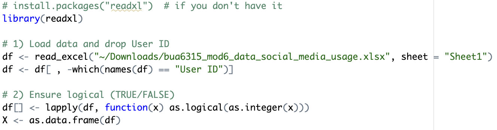
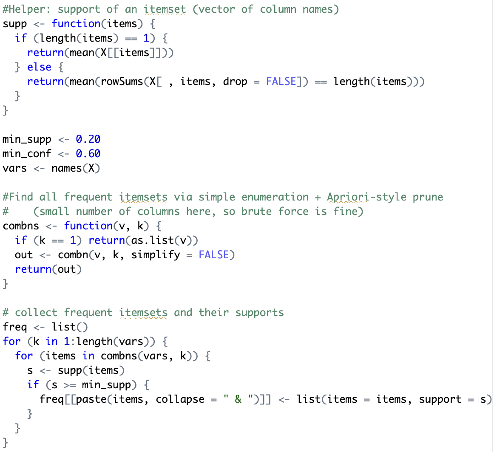

Discovering Social Media App Co‑Usage Patterns
Objective: Identify which popular social media apps are frequently used together by the same users using association rule mining.

Tools: R(readxl, dplyr), Excel
Project Snapshot
- Cleaned the dataset and converted 1/0 indicators to logical values. 
- Enumerated frequent itemsets and generated rules without relying on heavy packages, keeping the logic transparent. 
- Calculated support, confidence, and lift for each rule.
Data: 100 respondents; columns are binary app‑usage indicators. User ID excluded.
Method: Association rules with thresholds support ≥ 20% and confidence ≥ 60%; ranked by lift.
What I Did:


Result Highlights:
- 8 rules met the thresholds.
- Top rule: {Snapchat} ⇒ {Instagram}
- Support: 0.30 (30 users)
- Confidence: 0.638 (63.8% of Snapchat users also use Instagram)
- Lift: 1.277 (+27.7% more likely than baseline)
Impact: Useful for cross‑promotion, bundled campaigns, and partnership targeting between apps with overlapping audiences.